<!DOCTYPE html>
<html lang="zh-CN">
<head>
  <meta charset="UTF-8">
  <meta name="viewport" content="width=device-width, initial-scale=1.0, viewport-fit=cover">
  <meta name="description" content="《福尔摩斯：侦探顾问》（Sherlock Holmes Consulting Detective: The Thames Murders &amp; Other Cases）官方英文规则书全文中文翻译：推理 · 案卷阅读 · 合作破案，12 页整本译出，含设置、流程、计分与附录，附官方原文 PDF 链接。">
  <title data-zh="福尔摩斯：侦探顾问 (Sherlock Holmes Consulting Detective: The Thames Murders &amp; Other Cases) · 规则 — 桌游规则书" data-en="Sherlock Holmes Consulting Detective: The Thames Murders &amp; Other Cases · Rules — Board Game Rules">福尔摩斯：侦探顾问 (Sherlock Holmes Consulting Detective: The Thames Murders &amp; Other Cases) · 规则 — 桌游规则书</title>
  <link rel="icon" href="data:image/svg+xml,<svg xmlns='http://www.w3.org/2000/svg' viewBox='0 0 100 100'><text y='0.9em' font-size='90'>🔍</text></svg>">
  <link rel="stylesheet" href="../assets/css/style.css">
  <link rel="canonical" href="https://rule.zhibinai.cn/games/sherlock-holmes-cd.html">
  <meta property="og:site_name" content="桌游规则书">
  <meta property="og:locale" content="zh_CN">
  <meta property="og:type" content="article">
  <meta property="og:title" content="福尔摩斯：侦探顾问 (Sherlock Holmes Consulting Detective: The Thames Murders &amp;amp; Other Cases) · 规则 — 桌游规则书">
  <meta property="og:description" content="《福尔摩斯：侦探顾问》（Sherlock Holmes Consulting Detective: The Thames Murders &amp;amp; Other Cases）官方英文规则书全文中文翻译：推理 · 案卷阅读 · 合作破案，12 页整本译出，含设置、流程、计分与附录，附官方原文 PDF 链接。">
  <meta property="og:url" content="https://rule.zhibinai.cn/games/sherlock-holmes-cd.html">
  <meta property="og:image" content="https://rule.zhibinai.cn/assets/img/sherlock-holmes-cd/01.webp">
  <meta name="twitter:card" content="summary_large_image">
  <meta name="twitter:title" content="福尔摩斯：侦探顾问 (Sherlock Holmes Consulting Detective: The Thames Murders &amp;amp; Other Cases) · 规则 — 桌游规则书">
  <meta name="twitter:description" content="《福尔摩斯：侦探顾问》（Sherlock Holmes Consulting Detective: The Thames Murders &amp;amp; Other Cases）官方英文规则书全文中文翻译：推理 · 案卷阅读 · 合作破案，12 页整本译出，含设置、流程、计分与附录，附官方原文 PDF 链接。">
  <script type="application/ld+json">{
 "@context": "https://schema.org",
 "@graph": [
  {
   "@type": "WebSite",
   "@id": "https://rule.zhibinai.cn/#website",
   "name": "桌游规则书",
   "url": "https://rule.zhibinai.cn/",
   "inLanguage": "zh-CN",
   "description": "免费中文桌游规则书查询站：热门桌游完整中文规则全文 + Board Game Arena 全量官方规则中文版。"
  },
  {
   "@type": "WebPage",
   "@id": "https://rule.zhibinai.cn/games/sherlock-holmes-cd.html",
   "url": "https://rule.zhibinai.cn/games/sherlock-holmes-cd.html",
   "name": "福尔摩斯：侦探顾问 (Sherlock Holmes Consulting Detective: The Thames Murders &amp; Other Cases) · 规则 — 桌游规则书",
   "description": "《福尔摩斯：侦探顾问》（Sherlock Holmes Consulting Detective: The Thames Murders &amp; Other Cases）官方英文规则书全文中文翻译：推理 · 案卷阅读 · 合作破案，12 页整本译出，含设置、流程、计分与附录，附官方原文 PDF 链接。",
   "isPartOf": {
    "@id": "https://rule.zhibinai.cn/#website"
   },
   "inLanguage": "zh-CN",
   "dateModified": "2026-11-09",
   "primaryImageOfPage": {
    "@type": "ImageObject",
    "url": "https://rule.zhibinai.cn/assets/img/sherlock-holmes-cd/01.webp"
   }
  },
  {
   "@type": "BreadcrumbList",
   "itemListElement": [
    {
     "@type": "ListItem",
     "position": 1,
     "name": "首页",
     "item": "https://rule.zhibinai.cn/"
    },
    {
     "@type": "ListItem",
     "position": 2,
     "name": "福尔摩斯：侦探顾问 (Sherlock Holmes Consulting Detective: The Thames Murders &amp; Other Cases)",
     "item": "https://rule.zhibinai.cn/games/sherlock-holmes-cd.html"
    }
   ]
  }
 ]
}</script>
  <!-- seo-wired -->
</head>
<body data-theme="sherlock-holmes-cd" data-game-key="sherlock-holmes-cd">

  <div class="progress-bar" aria-hidden="true"></div>

  <header class="topbar">
    <button class="menu-btn" aria-label="打开目录" aria-expanded="false" data-i18n-aria="openToc">☰</button>
    <a class="brand" href="../index.html" data-i18n="brand">🎲 桌游规则书</a>
    <span class="topbar-title" data-zh="福尔摩斯：侦探顾问" data-en="Sherlock Holmes Consulting Detective: The Thames Murders &amp; Other Cases">福尔摩斯：侦探顾问</span>
  </header>

  <div class="layout">
    <aside class="sidebar" id="sidebar">
      <nav class="toc" aria-label="本页目录" data-i18n-aria="onThisPage">
        <div class="toc-title" data-i18n="onThisPage">本页目录</div>
        <ul id="toc-list"></ul>
      </nav>
      <nav aria-label="全部游戏" data-i18n-aria="allGames">
        <div class="toc-title" data-i18n="allGames">全部游戏</div>
        <ul>
          <li><a href="../index.html" data-i18n="home">🏠 返回首页</a></li>
          <li><a href="7-wonders.html" data-zh="🏛️ 七大奇迹" data-en="🏛️ 7 Wonders">🏛️ 七大奇迹</a></li>
          <li><a href="brass-birmingham.html" data-zh="🏭 工业革命：伯明翰" data-en="🏭 Brass: Birmingham">🏭 工业革命：伯明翰</a></li>
          <li><a href="vale-of-eternity.html" data-zh="✨ 永恒之谷" data-en="✨ The Vale of Eternity">✨ 永恒之谷</a></li>
          <li><a href="wingspan.html" data-zh="🦜 展翅翱翔" data-en="🦜 Wingspan">🦜 展翅翱翔</a></li>
          <li><a href="pokemon-grove.html" data-zh="🌳 宝可梦林地探索" data-en="🌳 Pokemon Grove">🌳 宝可梦林地探索</a></li>
          <li><a href="puerto-rico.html" data-zh="⛵ 波多黎各" data-en="⛵ Puerto Rico">⛵ 波多黎各</a></li>
          <li><a href="barcelona.html" data-zh="🌸 巴塞罗那" data-en="🌸 Barcelona">🌸 巴塞罗那</a></li>
          <li><a href="dune-imperium.html" data-zh="🏜️ 沙丘：帝国" data-en="🏜️ Dune: Imperium">🏜️ 沙丘：帝国</a></li>
          <li><a href="dune-imperium-uprising.html" data-zh="🪱 沙丘：帝国起义" data-en="🪱 Dune: Imperium – Uprising">🪱 沙丘：帝国起义</a></li>
          <li><a href="ascension.html" data-zh="🃏 创升纪元" data-en="🃏 Ascension">🃏 创升纪元</a></li>
          <li><a href="tulip-bubble.html" data-zh="🌷 郁金香泡沫" data-en="🌷 Tulip Bubble">🌷 郁金香泡沫</a></li>
          <li><a href="trajan.html" data-zh="🦅 图拉真" data-en="🦅 Trajan">🦅 图拉真</a></li>
          <li><a href="galileo-galilei.html" data-zh="🔭 伽利略：伽利莱" data-en="🔭 Galileo Galilei">🔭 伽利略：伽利莱</a></li>
          <li><a href="orloj.html" data-zh="🕰️ 奥洛伊：布拉格天文钟" data-en="🕰️ Orloj: The Prague Astronomical Clock">🕰️ 奥洛伊：布拉格天文钟</a></li>
          <li><a href="food-chain-magnate.html" data-zh="🍔 快餐连锁大亨" data-en="🍔 Food Chain Magnate">🍔 快餐连锁大亨</a></li>
          <li><a href="clank-catacombs.html" data-zh="🐉 CLANK! 地下墓穴" data-en="🐉 Clank!: Catacombs">🐉 CLANK! 地下墓穴</a></li>
          <li><a href="clank-catacombs-underworld.html" data-zh="💀 CLANK! 地下墓穴:地下世界" data-en="💀 Clank! Catacombs: Underworld">💀 CLANK! 地下墓穴:地下世界</a></li>
          <li><a href="clank-adventuring-party.html" data-zh="🗡️ CLANK! 冒险队" data-en="🗡️ Clank!: Adventuring Party">🗡️ CLANK! 冒险队</a></li>
          <li><a href="ark-nova-marine-worlds.html" data-zh="🐙 方舟动物园：海洋世界" data-en="🐙 Ark Nova: Marine Worlds">🐙 方舟动物园：海洋世界</a></li>
          <li><a href="arnak-expedition-leaders.html" data-zh="🗿 阿纳克遗迹:探险队长" data-en="🗿 Lost Ruins of Arnak: Expedition Leaders">🗿 阿纳克遗迹:探险队长</a></li>
          <li><a href="speakeasy.html" data-zh="🎷 地下酒吧" data-en="🎷 Speakeasy">🎷 地下酒吧</a></li>
          <li><a href="power-grid.html" data-zh="⚡ 电力公司" data-en="⚡ Power Grid">⚡ 电力公司</a></li>
          <li><a href="seti.html" data-zh="🛰️ SETI：寻找外星人" data-en="🛰️ SETI: Search for Extraterrestrial Intelligence">🛰️ SETI：寻找外星人</a></li>
          <li><a href="seti-space-agencies.html" data-zh="🚀 地外文明：太空机构" data-en="🚀 SETI: Space Agencies">🚀 地外文明：太空机构</a></li>
          <li><a href="white-castle.html" data-zh="🏯 姬路城" data-en="🏯 The White Castle">🏯 姬路城</a></li>
          <li><a href="white-castle-matcha.html" data-zh="🍵 姬路城：茶道" data-en="🍵 The White Castle: Matcha">🍵 姬路城：茶道</a></li>
          <li><a href="endeavor-deep-sea.html" data-zh="🌊 奋进号：深海" data-en="🌊 Endeavor: Deep Sea">🌊 奋进号：深海</a></li>
          <li><a href="druids-of-edora.html" data-zh="🌲 埃多拉的德鲁伊" data-en="🌲 The Druids of Edora">🌲 埃多拉的德鲁伊</a></li>
          <li><a href="grand-austria-hotel.html" data-zh="🏨 奥地利大饭店" data-en="🏨 Grand Austria Hotel">🏨 奥地利大饭店</a></li>
          <li><a href="the-message.html" data-zh="🕵️ 风声再临" data-en="🕵️ The Message">🕵️ 风声再临</a></li>
          <li><a href="gwt-new-zealand.html" data-zh="🐑 大西部开拓者:新西兰" data-en="🐑 Great Western Trail: New Zealand">🐑 大西部开拓者:新西兰</a></li>
          <li><a href="fields-of-arle.html" data-zh="🌾 阿勒農場" data-en="🌾 Fields of Arle">🌾 阿勒農場</a></li>
          <li><a href="gaiaproject-lost-fleet.html" data-zh="🌌 盖亚计划:失落的舰队" data-en="🌌 Gaia Project: The Lost Fleet">🌌 盖亚计划:失落的舰队</a></li>
          <li><a href="spirit-island.html" data-zh="🏝️ 灵迹岛" data-en="🏝️ Spirit Island">🏝️ 灵迹岛</a></li>
          <li><a href="harmonies.html" data-zh="🦁 自然和弦" data-en="🦁 Harmonies">🦁 自然和弦</a></li>
          <li><a href="agricola-revised.html" data-zh="🌾 农场主（修订版）" data-en="🌾 Agricola (Revised Edition)">🌾 农场主（修订版）</a></li>
          <li><a href="final-girl.html" data-zh="🎬 最终女孩" data-en="🎬 Final Girl">🎬 最终女孩</a></li>
          <li><a href="le-havre.html" data-zh="⚓ 勒阿弗尔" data-en="⚓ Le Havre">⚓ 勒阿弗尔</a></li>
          <li><a href="lotr-duel-for-middle-earth.html" data-zh="🌋 魔戒：中土对决" data-en="🌋 The Lord of the Rings: Duel for Middle-earth">🌋 魔戒：中土对决</a></li>
          <li><a href="marvel-champions.html" data-zh="🦸 漫威群英传：卡牌版" data-en="🦸 Marvel Champions: The Card Game">🦸 漫威群英传：卡牌版</a></li>
          <li><a href="nemesis.html" data-zh="👽 复仇女神号" data-en="👽 Nemesis">👽 复仇女神号</a></li>
          <li><a href="pandemic-legacy-season-0.html" data-zh="🕵️ 瘟疫危机：传承·第0季" data-en="🕵️ Pandemic Legacy: Season 0">🕵️ 瘟疫危机：传承·第0季</a></li>
          <li><a href="pandemic-legacy-season-1.html" data-zh="🦠 瘟疫危机：传承·第一季" data-en="🦠 Pandemic Legacy: Season 1">🦠 瘟疫危机：传承·第一季</a></li>
          <li><a href="android-netrunner.html" data-zh="🤖 安卓：潜袭" data-en="🤖 Android: Netrunner">🤖 安卓：潜袭</a></li>
          <li><a href="arkham-horror-lcg.html" data-zh="🔍 诡镇奇谈：卡牌版" data-en="🔍 Arkham Horror: The Card Game">🔍 诡镇奇谈：卡牌版</a></li>
          <li><a href="bomb-busters.html" data-zh="💣 拆弹小队" data-en="💣 Bomb Busters">💣 拆弹小队</a></li>
          <li><a href="cascadia.html" data-zh="🌲 卡斯卡迪亚" data-en="🌲 Cascadia">🌲 卡斯卡迪亚</a></li>
          <li><a href="everdell.html" data-zh="🌰 仙境幽谷" data-en="🌰 Everdell">🌰 仙境幽谷</a></li>
          <li><a href="five-tribes.html" data-zh="🏜️ 五大部落" data-en="🏜️ Five Tribes: The Djinns of Naqala">🏜️ 五大部落</a></li>
          <li><a href="kanban-ev.html" data-zh="🚗 看板：电动汽车版" data-en="🚗 Kanban EV">🚗 看板：电动汽车版</a></li>
          <li><a href="lisboa.html" data-zh="🏛️ 里斯本" data-en="🏛️ Lisboa">🏛️ 里斯本</a></li>
          <li><a href="mage-knight.html" data-zh="🧙 魔骑士" data-en="🧙 Mage Knight Board Game">🧙 魔骑士</a></li>
          <li><a href="mansions-of-madness-2e.html" data-zh="🏚️ 疯狂诡宅（第二版）" data-en="🏚️ Mansions of Madness: Second Edition">🏚️ 疯狂诡宅（第二版）</a></li>
          <li><a href="paladins-of-the-west-kingdom.html" data-zh="🛡️ 西王国的圣骑士" data-en="🛡️ Paladins of the West Kingdom">🛡️ 西王国的圣骑士</a></li>
          <li><a href="pandemic-legacy-season-2.html" data-zh="🧭 瘟疫危机：传承·第二季" data-en="🧭 Pandemic Legacy: Season 2">🧭 瘟疫危机：传承·第二季</a></li>
          <li><a href="quacks.html" data-zh="🧪 奎德林堡的江湖郎中" data-en="🧪 Quacks">🧪 奎德林堡的江湖郎中</a></li>
          <li><a href="root.html" data-zh="🦊 茂林源记" data-en="🦊 Root">🦊 茂林源记</a></li>
          <li><a href="slay-the-spire-bg.html" data-zh="🗡️ 杀戮尖塔：版图游戏" data-en="🗡️ Slay the Spire: The Board Game">🗡️ 杀戮尖塔：版图游戏</a></li>
          <li><a href="star-wars-imperial-assault.html" data-zh="🎯 星球大战：帝国突击" data-en="🎯 Star Wars: Imperial Assault">🎯 星球大战：帝国突击</a></li>
          <li><a href="star-wars-rebellion.html" data-zh="🚀 星球大战：叛乱" data-en="🚀 Star Wars: Rebellion">🚀 星球大战：叛乱</a></li>
          <li><a href="the-crew-planet-nine.html" data-zh="🪐 星际探险队：第九行星" data-en="🪐 The Crew: The Quest for Planet Nine">🪐 星际探险队：第九行星</a></li>
          <li><a href="the-gallerist.html" data-zh="🖼️ 画商" data-en="🖼️ The Gallerist">🖼️ 画商</a></li>
          <li><a href="ticket-to-ride-legacy.html" data-zh="🚂 车票之旅：传承·西部传奇" data-en="🚂 Ticket to Ride Legacy: Legends of the West">🚂 车票之旅：传承·西部传奇</a></li>
          <li><a href="tzolkin.html" data-zh="🌀 卓尔金历：玛雅历法" data-en="🌀 Tzolk'in: The Mayan Calendar">🌀 卓尔金历：玛雅历法</a></li>
          <li><a href="underwater-cities.html" data-zh="🌊 水下城市" data-en="🌊 Underwater Cities">🌊 水下城市</a></li>
          <li><a href="blood-on-the-clocktower.html" data-zh="🔔 血染钟楼" data-en="🔔 Blood on the Clocktower">🔔 血染钟楼</a></li>
          <li><a href="oathsworn.html" data-zh="🐺 守誓者：深入密林" data-en="🐺 Oathsworn: Into the Deepwood">🐺 守誓者：深入密林</a></li>
          <li><a href="cthulhu-death-may-die.html" data-zh="🐙 克苏鲁：死亡可能会死" data-en="🐙 Cthulhu: Death May Die">🐙 克苏鲁：死亡可能会死</a></li>
          <li><a href="too-many-bones.html" data-zh="💀 太多骨头" data-en="💀 Too Many Bones">💀 太多骨头</a></li>
          <li><a href="crokinole.html" data-zh="🎯 弹指棋" data-en="🎯 Crokinole">🎯 弹指棋</a></li>
          <li><a href="wingspan-asia.html" data-zh="🐦 展翅翱翔：亚洲" data-en="🐦 Wingspan Asia">🐦 展翅翱翔：亚洲</a></li>
          <li><a href="viticulture.html" data-zh="🍇 葡萄酒庄园（核心版）" data-en="🍇 Viticulture Essential Edition">🍇 葡萄酒庄园（核心版）</a></li>
          <li><a href="twilight-struggle.html" data-zh="🌍 冷战热斗" data-en="🌍 Twilight Struggle">🌍 冷战热斗</a></li>
          <li><a href="on-mars.html" data-zh="🔴 火星之上" data-en="🔴 On Mars">🔴 火星之上</a></li>
          <li><a href="war-of-the-ring.html" data-zh="💍 魔戒圣战" data-en="💍 War of the Ring: Second Edition">💍 魔戒圣战</a></li>
          <li><a href="mechs-vs-minions.html" data-zh="⚙️ 机甲大战小兵" data-en="⚙️ Mechs vs. Minions">⚙️ 机甲大战小兵</a></li>
          <li><a href="clank-legacy.html" data-zh="🐉 咔嚓！传承：收购公司" data-en="🐉 Clank! Legacy: Acquisitions Incorporated">🐉 咔嚓！传承：收购公司</a></li>
          <li><a href="eclipse-second-dawn.html" data-zh="🌌 星蚀：银河二次黎明" data-en="🌌 Eclipse: Second Dawn for the Galaxy">🌌 星蚀：银河二次黎明</a></li>
          <li><a href="voidfall.html" data-zh="🌑 虚空坠落" data-en="🌑 Voidfall">🌑 虚空坠落</a></li>
          <li><a href="sleeping-gods.html" data-zh="🛶 沉睡之神" data-en="🛶 Sleeping Gods">🛶 沉睡之神</a></li>
          <li><a href="gloomhaven.html" data-zh="⚔️ 幽港迷城" data-en="⚔️ Gloomhaven">⚔️ 幽港迷城</a></li>
          <li><a href="gloomhaven-jaws-of-the-lion.html" data-zh="🦁 幽港迷城：雄狮之颚" data-en="🦁 Gloomhaven: Jaws of the Lion">🦁 幽港迷城：雄狮之颚</a></li>
          <li><a href="frosthaven.html" data-zh="❄️ 寒霜迷城" data-en="❄️ Frosthaven">❄️ 寒霜迷城</a></li>
          <li><a href="aeons-end-war-eternal.html" data-zh="💠 末日决战：永恒战争" data-en="💠 Aeon's End: War Eternal">💠 末日决战：永恒战争</a></li>
          <li><a href="arcs.html" data-zh="🌟 星弧航记" data-en="🌟 Arcs">🌟 星弧航记</a></li>
          <li><a href="battlestar-galactica.html" data-zh="🚀 太空堡垒卡拉狄加" data-en="🚀 Battlestar Galactica: The Board Game">🚀 太空堡垒卡拉狄加</a></li>
          <li><a href="codenames.html" data-zh="🕵️ 行动代号" data-en="🕵️ Codenames">🕵️ 行动代号</a></li>
          <li><a href="concordia-venus.html" data-zh="🕊️ 康考迪亚：维纳斯" data-en="🕊️ Concordia Venus">🕊️ 康考迪亚：维纳斯</a></li>
          <li><a href="dominant-species.html" data-zh="🦣 优势物种" data-en="🦣 Dominant Species">🦣 优势物种</a></li>
          <li><a href="iberia.html" data-zh="❓ 伊比利亚（待查词条）" data-en="❓ Iberia">❓ 伊比利亚（待查词条）</a></li>
          <li><a href="istanbul.html" data-zh="🏺 伊斯坦布尔" data-en="🏺 Istanbul">🏺 伊斯坦布尔</a></li>
          <li><a href="lotr-journeys-in-middle-earth.html" data-zh="🗺️ 魔戒：中土之旅" data-en="🗺️ The Lord of the Rings: Journeys in Middle-earth">🗺️ 魔戒：中土之旅</a></li>
          <li><a href="lotr-lcg.html" data-zh="💍 魔戒：卡牌游戏" data-en="💍 The Lord of the Rings: The Card Game">💍 魔戒：卡牌游戏</a></li>
          <li><a href="nemesis-lockdown.html" data-zh="🚪 复仇女神号：封锁" data-en="🚪 Nemesis: Lockdown">🚪 复仇女神号：封锁</a></li>
          <li><a href="rising-sun.html" data-zh="🎴 旭日战魂" data-en="🎴 Rising Sun">🎴 旭日战魂</a></li>
          <li><a href="robinson-crusoe.html" data-zh="🏝️ 鲁滨逊漂流记：诅咒之岛" data-en="🏝️ Robinson Crusoe: Adventures on the Cursed Island">🏝️ 鲁滨逊漂流记：诅咒之岛</a></li>
          <li><a href="star-realms.html" data-zh="🚀 星域奇航？" data-en="🚀 Star Realms">🚀 星域奇航？</a></li>
          <li><a href="tainted-grail.html" data-zh="🕯️ 污痕圣杯：阿瓦隆的陷落" data-en="🕯️ Tainted Grail: The Fall of Avalon">🕯️ 污痕圣杯：阿瓦隆的陷落</a></li>
          <li><a href="the-7th-continent.html" data-zh="🏝️ 第七大陆" data-en="🏝️ The 7th Continent">🏝️ 第七大陆</a></li>
          <li><a href="trickerion.html" data-zh="🎩 幻术师：幻象传奇？" data-en="🎩 Trickerion: Legends of Illusion">🎩 幻术师：幻象传奇？</a></li>
          <li><a href="undaunted-normandy.html" data-zh="🎖️ 无畏：诺曼底" data-en="🎖️ Undaunted: Normandy">🎖️ 无畏：诺曼底</a></li>
          <li><a href="unmatched-cobble-and-fog.html" data-zh="🌫️ 无双对决：雾都？" data-en="🌫️ Unmatched: Cobble &amp; Fog">🌫️ 无双对决：雾都？</a></li>
          <li><a href="viscounts-of-the-west-kingdom.html" data-zh="📜 西王国的子爵" data-en="📜 Viscounts of the West Kingdom">📜 西王国的子爵</a></li>
          <li><a href="age-of-steam.html" data-zh="🚂 蒸汽时代" data-en="🚂 Age of Steam">🚂 蒸汽时代</a></li>
          <li><a href="clank-in-space.html" data-zh="🛸 咔嚓！太空！" data-en="🛸 Clank! In! Space!: A Deck-Building Adventure">🛸 咔嚓！太空！</a></li>
          <li><a href="dominion-2e.html" data-zh="🏰 皇舆争霸（第二版）" data-en="🏰 Dominion (Second Edition)">🏰 皇舆争霸（第二版）</a></li>
          <li><a href="dominion-intrigue.html" data-zh="👑 皇舆争霸：暗潮汹涌（二版）" data-en="👑 Dominion: Intrigue">👑 皇舆争霸：暗潮汹涌（二版）</a></li>
          <li><a href="dwellings-of-eldervale.html" data-zh="🏘️ 永恒谷居所？" data-en="🏘️ Dwellings of Eldervale">🏘️ 永恒谷居所？</a></li>
          <li><a href="eldritch-horror.html" data-zh="🐙 全球惊悚" data-en="🐙 Eldritch Horror">🐙 全球惊悚</a></li>
          <li><a href="endeavor-age-of-sail.html" data-zh="⛵ 奋进：风帆时代" data-en="⛵ Endeavor: Age of Sail">⛵ 奋进：风帆时代</a></li>
          <li><a href="glen-more-2.html" data-zh="🌾 格伦莫尔2：编年史" data-en="🌾 Glen More II: Chronicles">🌾 格伦莫尔2：编年史</a></li>
          <li><a href="hansa-teutonica.html" data-zh="🏛️ 汉萨同盟" data-en="🏛️ Hansa Teutonica">🏛️ 汉萨同盟</a></li>
          <li><a href="inis.html" data-zh="🍀 翠屿秘境（INIS）" data-en="🍀 Inis">🍀 翠屿秘境（INIS）</a></li>
          <li><a href="iss-vanguard.html" data-zh="🛰️ ISS 先锋号" data-en="🛰️ ISS Vanguard">🛰️ ISS 先锋号</a></li>
          <li><a href="kemet.html" data-zh="🐍 凯麦特" data-en="🐍 Kemet">🐍 凯麦特</a></li>
          <li><a href="legendary-encounters-alien.html" data-zh="👽 传奇遭遇：异形" data-en="👽 Legendary Encounters: An Alien Deck Building Game">👽 传奇遭遇：异形</a></li>
          <li><a href="mombasa.html" data-zh="💎 蒙巴萨" data-en="💎 Mombasa">💎 蒙巴萨</a></li>
          <li><a href="quest-for-el-dorado.html" data-zh="🏛️ 竞逐黄金国" data-en="🏛️ The Quest for El Dorado">🏛️ 竞逐黄金国</a></li>
          <li><a href="ra.html" data-zh="☀️ RA 太阳神" data-en="☀️ Ra">☀️ RA 太阳神</a></li>
          <li><a href="radlands.html" data-zh="🌵 辐射荒漠？" data-en="🌵 Radlands">🌵 辐射荒漠？</a></li>
          <li><a href="raiders-of-the-north-sea.html" data-zh="⚓ 北海劫掠者" data-en="⚓ Raiders of the North Sea">⚓ 北海劫掠者</a></li>
          <li><a href="rajas-of-the-ganges.html" data-zh="🐘 恒河王侯" data-en="🐘 Rajas of the Ganges">🐘 恒河王侯</a></li>
          <li><a href="search-for-planet-x.html" data-zh="🔭 搜寻行星 X" data-en="🔭 The Search for Planet X">🔭 搜寻行星 X</a></li>
          <li><a href="sw-outer-rim.html" data-zh="🪙 星球大战：外环" data-en="🪙 Star Wars: Outer Rim">🪙 星球大战：外环</a></li>
          <li><a href="sw-x-wing.html" data-zh="✈️ 星球大战：X 翼战机" data-en="✈️ Star Wars: X-Wing Miniatures Game">✈️ 星球大战：X 翼战机</a></li>
          <li><a href="thats-pretty-clever.html" data-zh="🎲 绝顶聪明" data-en="🎲 That's Pretty Clever!">🎲 绝顶聪明</a></li>
          <li><a href="twilight-imperium-3e.html" data-zh="🪐 帝国曙光：第三版" data-en="🪐 Twilight Imperium: Third Edition">🪐 帝国曙光：第三版</a></li>
          <li><a href="tyrants-of-the-underdark.html" data-zh="🕸️ 地底暴君" data-en="🕸️ Tyrants of the Underdark">🕸️ 地底暴君</a></li>
          <li><a href="vinhos.html" data-zh="🍷 葡萄园：典藏版" data-en="🍷 Vinhos: Deluxe Edition">🍷 葡萄园：典藏版</a></li>
          <li><a href="wonderlands-war.html" data-zh="🐇 仙境之战？" data-en="🐇 Wonderland's War">🐇 仙境之战？</a></li>
          <li><a href="wyrmspan.html" data-zh="🐉 龙翼翱翔" data-en="🐉 Wyrmspan">🐉 龙翼翱翔</a></li>
          <li><a href="xia.html" data-zh="🌌 夏亚：漂流星系传说？" data-en="🌌 Xia: Legends of a Drift System">🌌 夏亚：漂流星系传说？</a></li>
          <li><a href="tfm-ares-expedition.html" data-zh="🔴 重塑火星：战神远征" data-en="🔴 Terraforming Mars: Ares Expedition">🔴 重塑火星：战神远征</a></li>
          <li><a href="mtg.html" data-zh="🃏 万智牌" data-en="🃏 Magic: The Gathering">🃏 万智牌</a></li>
        </ul>
      </nav>
    </aside>
    <div class="backdrop" id="backdrop" aria-hidden="true"></div>

    <main class="content">
      <article data-page-lang="zh" data-alt-body="../assets/i18n/rulebooks/sherlock-holmes-cd.en.html">
        <header class="page-header">
          <h1 class="game-title" data-zh="🔍 福尔摩斯：侦探顾问" data-en="🔍 Sherlock Holmes Consulting Detective: The Thames Murders &amp; Other Cases">🔍 福尔摩斯：侦探顾问</h1>
          <p class="game-sub" data-zh="Sherlock Holmes Consulting Detective: The Thames Murders &amp; Other Cases · 设计：Gary Grady, Suzanne Goldberg &amp; Anthony Meredith · Space Cowboys (Ystari 现行版) 出版 · 1–8 人 · 官方英文规则书全文翻译（12 页 · AI 辅助机翻）" data-en="Sherlock Holmes Consulting Detective: The Thames Murders &amp; Other Cases · Official English rulebook · 12 pages" >Sherlock Holmes Consulting Detective: The Thames Murders &amp; Other Cases · 设计：Gary Grady, Suzanne Goldberg &amp; Anthony Meredith · Space Cowboys (Ystari 现行版) 出版 · 1–8 人 · 官方英文规则书全文翻译（12 页 · AI 辅助机翻）</p>
          <div class="meta-chips">
            <a class="meta-chip bgg-chip" href="https://boardgamegeek.com/boardgame/2511" target="_blank" rel="noopener" title="BoardGameGeek：⭐综合评分 7.6，排名 #181，权重/复杂度 -/5（1 轻松 ~ 5 重度），-人评分。点击查看原页面">⭐ BGG 7.6 · 排名 #181</a>
            <span class="meta-chip">👥 1–8 人</span>
            <span class="meta-chip">推理 · 案卷阅读</span>
            <span class="meta-chip">合作破案</span>
            <span class="meta-chip">📖 官方英文规则书全文翻译</span>
          </div>
        </header>

        <div class="rule-body">
<blockquote>
<p>本页收录《福尔摩斯：侦探顾问》（Sherlock Holmes Consulting Detective: The Thames Murders & Other Cases, 1981）的<strong>原版官方规则书全部 12 页</strong>（底本：<a href="https://cdn.svc.asmodee.net/production-spacecowboys/uploads/2025/11/59baa2_6b8d120337b04e9b881d8a135d0a189c.pdf" target="_blank" rel="noopener">Space Cowboys 官方游戏页（spacecowboys-games.com/game/jack-the-ripper-west-end-adventures）Rulebook English 下载</a>，59baa2_6b8d120337b04e9b881d8a135d0a189c.pdf），逐页随图排列，<strong>点击任意图片即可放大查看</strong>；每页下方默认折叠了该页的 AI 辅助中文机翻对照，需要时可展开。规则内容归 Space Cowboys (Ystari 现行版) 及版权方所有，收录仅供个人学习查阅。</p>
<p><small>整理说明：机翻对照按本站术语口径对齐（牌库/手牌/回合/轮/板块/指示物等），PDF 图文混排页的语序可能与原书视觉顺序略有出入；规则细节请一律以页面上方原书页面为准。</small></p>
</blockquote>

<figure>
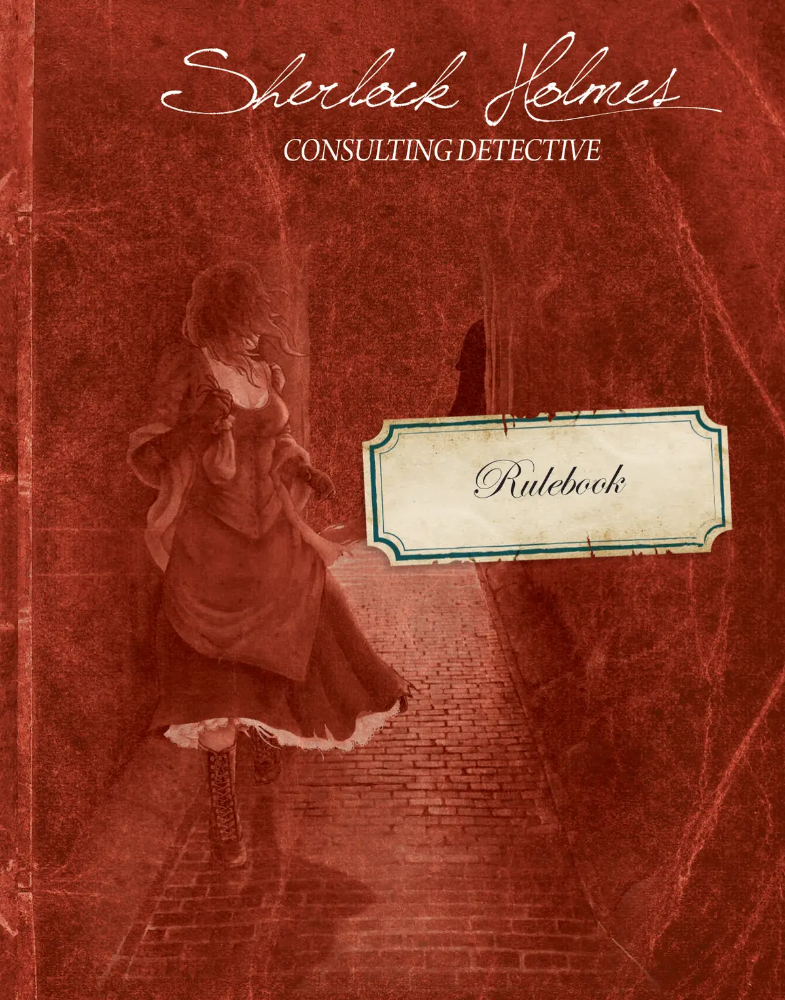
<figcaption>原版规则书 · 第 1 页（点击图片放大）</figcaption>
</figure>

<details class="mt-fold">
<summary>📝 第 1 页 AI 机翻对照（点击展开）</summary>
<div class="mt-body"><p>h 2 h</p>

<p>规则书</p>

<h2>咨询侦探</h2></div>
</details>

<figure>
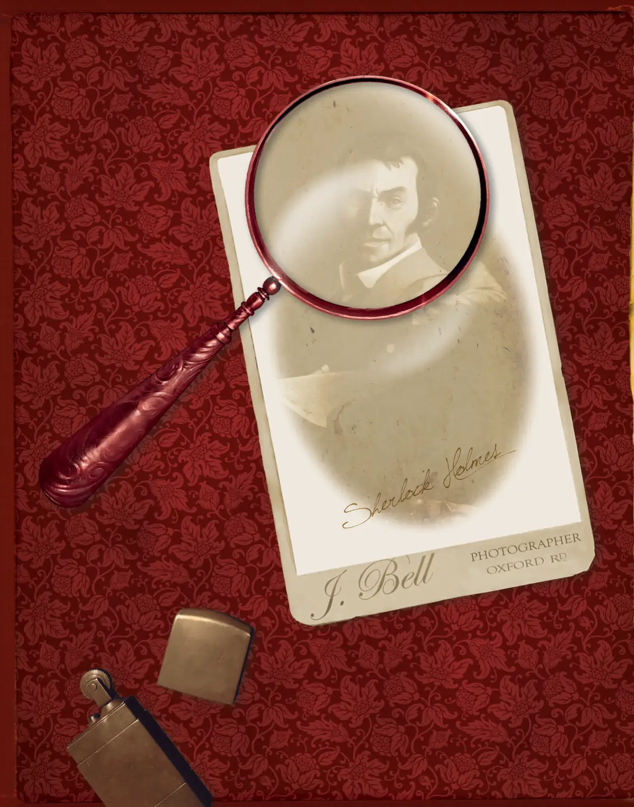
<figcaption>原版规则书 · 第 2 页（点击图片放大）</figcaption>
</figure>

<details class="mt-fold">
<summary>📝 第 2 页 AI 机翻对照（点击展开）</summary>
<div class="mt-body"><p>h 3 h</p></div>
</details>

<figure>
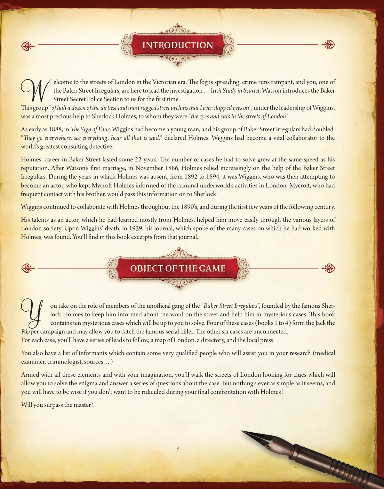
<figcaption>原版规则书 · 第 3 页（点击图片放大）</figcaption>
</figure>

<details class="mt-fold">
<summary>📝 第 3 页 AI 机翻对照（点击展开）</summary>
<div class="mt-body"><p>h  1 h</p>

<p>h 1 h</p>

<p>W</p>

<p>elcome to the streets of London in the Victorian era. The fog is spreading, crime runs rampant, and you, one of</p>

<p>the Baker Street Irregulars, are here to lead the investigation… In A Study in Scarlet, Watson introduces the Baker</p>

<p>Street Secret Police Section to us for the first time.</p>

<p>This group "of half a dozen of the dirtiest and most ragged street urchins that I ever clapped eyes on", under the leadership of Wiggins,</p>

<p>was a most precious help to Sherlock Holmes, to whom they were "the eyes and ears in the streets of London".</p>

<p>As early as 1888, in The Sign of Four, Wiggins had become a young man, and his group of Baker Street Irregulars had doubled.</p>

<p>"They go everywhere, see everything, hear all that is said," declared Holmes. Wiggins had become a vital collaborator to the</p>

<p>world's greatest consulting detective.</p>

<p>Holmes' career in Baker Street lasted some 22 years. The number of cases he had to solve grew at the same speed as his</p>

<p>reputation. After Watson's first marriage, in November 1886, Holmes relied increasingly on the help of the Baker Street</p>

<p>Irregulars. During the years in which Holmes was absent, from 1892 to 1894, it was Wiggins, who was then attempting to</p>

<p>become an actor, who kept Mycroft Holmes informed of the criminal underworld's activities in London. Mycroft, who had</p>

<p>frequent contact with his brother, would pass this information on to Sherlock.</p>

<p>Wiggins continued to collaborate with Holmes throughout the 1890's, and during the first few years of the following century.</p>

<p>His talents as an actor, which he had learned mostly from Holmes, helped him move easily through the various layers of</p>

<p>London society. Upon Wiggins' death, in 1939, his journal, which spoke of the many cases on which he had worked with</p>

<p>Holmes, was found. You'll find in this book excerpts from that journal.</p>

<h2>引言</h2>

<p>Y</p>

<p>ou take on the role of members of the unofficial gang of the "Baker Street Irregulars", founded by the famous Sher-</p>

<p>lock Holmes to keep him informed about the word on the street and help him in mysterious cases. This book</p>

<p>contains ten mysterious cases which will be up to you to solve. Four of these cases (books 1 to 4) form the Jack the Ripper campaign and may allow you to catch the famous serial killer. The other six cases are unconnected.</p>

<p>For each case, you'll have a series of leads to follow, a map of London, a directory, and the local press.</p>

<p>You also have a list of informants which contain some very qualified people who will assist you in your research (medical</p>

<p>examiner, criminologist, sources…)</p>

<p>Armed with all these elements and with your imagination, you'll walk the streets of London looking for clues which will</p>

<p>让你解开谜题并回答一系列关于案件的问题。但事情从来都不像看起来那么简单，如果你不想在与福尔摩斯的最终对峙中被嘲笑，你就必须明智！</p>

<p>你能超越大师吗？</p>

<h2>游戏目标</h2></div>
</details>

<figure>
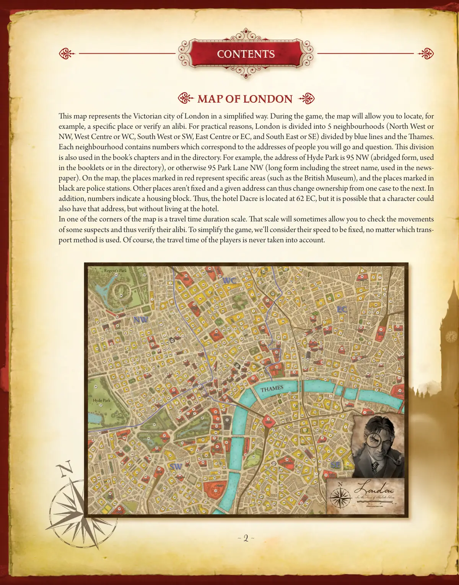
<figcaption>原版规则书 · 第 4 页（点击图片放大）</figcaption>
</figure>

<details class="mt-fold">
<summary>📝 第 4 页 AI 机翻对照（点击展开）</summary>
<div class="mt-body"><p>h 2 h</p>

<h2>伦敦地图</h2>

<p>这张地图以简化的方式表现了维多利亚时代的伦敦。在游戏中，地图将帮助你定位特定地点或验证不在场证明。出于实际考虑，伦敦被蓝线和泰晤士河划分为5个区域（西北区或NW，西中区或WC，西南区或SW，东中区或EC，和东南区或SE）。每个区域包含数字，对应着你将前去询问的人的地址。这种划分也用于本书的章节和名录中。例如，海德公园的地址是95 NW（缩写形式，用于手册或名录），或者95 Park Lane NW（完整形式，包含街道名，用于报纸）。在地图上，红色标记的地点代表特定区域（如大英博物馆），黑色标记的地点是警察局。其他地点不是固定的，因此一个给定地址在不同案件中可能更换所有权。此外，数字表示一个住宅区。因此，戴克里尔酒店位于62 EC，但可能有角色也拥有这个地址，但并不住在酒店里。</p>

<p>地图角落有一个旅行时间刻度尺。这个刻度尺有时可以让你检查一些嫌疑人的移动，从而验证他们的不在场证明。为简化游戏，我们假设他们的速度是固定的，无论使用哪种交通方式。当然，玩家的旅行时间从不被考虑在内。</p>

<h2>目录</h2></div>
</details>

<figure>
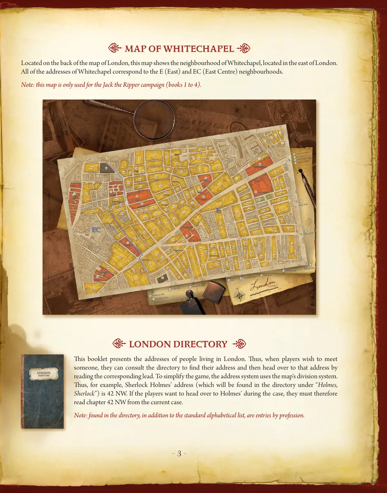
<figcaption>原版规则书 · 第 5 页（点击图片放大）</figcaption>
</figure>

<details class="mt-fold">
<summary>📝 第 5 页 AI 机翻对照（点击展开）</summary>
<div class="mt-body"><p>h 3 h</p>

<h2>白教堂地图</h2>

<p>位于伦敦地图的背面，这张地图展示了位于伦敦东部的白教堂区。白教堂的所有地址都对应E（东）和EC（东中）区域。</p>

<p>注意：这张地图仅用于开膛手杰克战役（第1至4册）。</p>

<h2>伦敦名录</h2>

<p>这本手册列出了居住在伦敦的人的地址。因此，当玩家希望会见某人时，可以查阅名录找到他们的地址，然后通过阅读相应的线索前往该地址。为简化游戏，地址系统使用了地图的划分系统。因此，例如，夏洛克·福尔摩斯的地址（将在名录的"Holmes, Sherlock"下找到）是42 NW。如果玩家想在案件中前往福尔摩斯那里，他们必须阅读当前案例中的42 NW章节。</p>

<p>注意：在名录中，除了标准的字母列表外，还有按职业分类的条目。</p></div>
</details>

<figure>
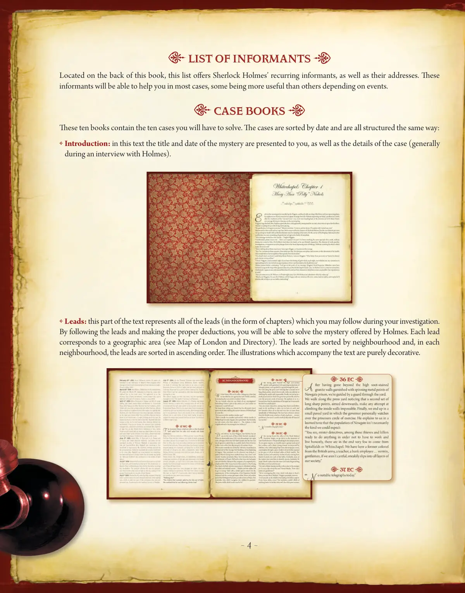
<figcaption>原版规则书 · 第 6 页（点击图片放大）</figcaption>
</figure>

<details class="mt-fold">
<summary>📝 第 6 页 AI 机翻对照（点击展开）</summary>
<div class="mt-body"><p>h 4 h</p>

<h2>信息提供者名单</h2>

<p>位于本书背面，这份名单提供了夏洛克·福尔摩斯（Sherlock Holmes）的常驻信息提供者及其地址。在大多数情况下，这些信息提供者将能够帮助你，根据事件的不同，有些会比其他更有用。</p>

<h2>案例手册</h2>

<p>这十本书包含了你需要解决的十个案件。案件按日期排序，并且结构相同：</p>

<p> 引言：在这段文字中，会向你呈现案件的标题和日期，以及案件的细节（通常是在与福尔摩斯的访谈中）。</p>

<p> 线索：这部分文本代表了你在调查过程中可以遵循的所有线索（以章节形式）。通过遵循线索并做出正确的推理，你将能够解决福尔摩斯提出的谜题。每条线索对应一个地理区域（参见伦敦地图和名录）。线索按社区排序，在每个社区内，线索按升序排列。伴随文本的插图纯粹是装饰性的。</p></div>
</details>

<figure>
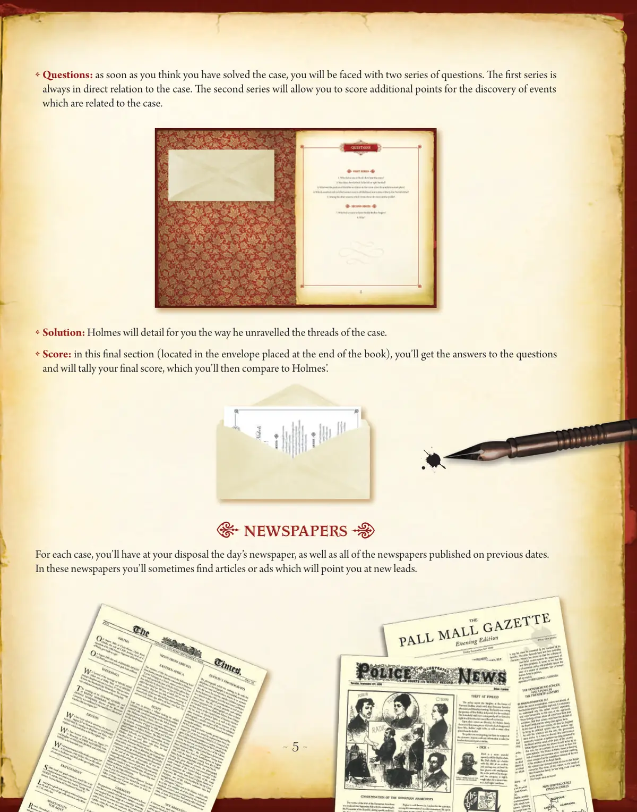
<figcaption>原版规则书 · 第 7 页（点击图片放大）</figcaption>
</figure>

<details class="mt-fold">
<summary>📝 第 7 页 AI 机翻对照（点击展开）</summary>
<div class="mt-body"><p>h  5 h</p>

<p> 问题：一旦你认为已经解决了案件，你将面临两组问题。第一组总是与案件直接相关。第二组将允许你因发现与案件相关的事件而获得额外分数。</p>

<p> 解决方案：福尔摩斯将向你详细说明他如何解开案件的线索。</p>

<p> 　得分：在这个最后部分（位于书末的信封中），你将获得问题的答案并计算你的最终得分，然后将其与福尔摩斯的得分进行比较。</p>

<h2>报纸</h2>

<p>对于每个案件，你将可以使用当天的报纸以及之前日期发布的所有报纸。在这些报纸中，你有时会发现文章或广告，它们会指引你找到新的线索。</p></div>
</details>

<figure>
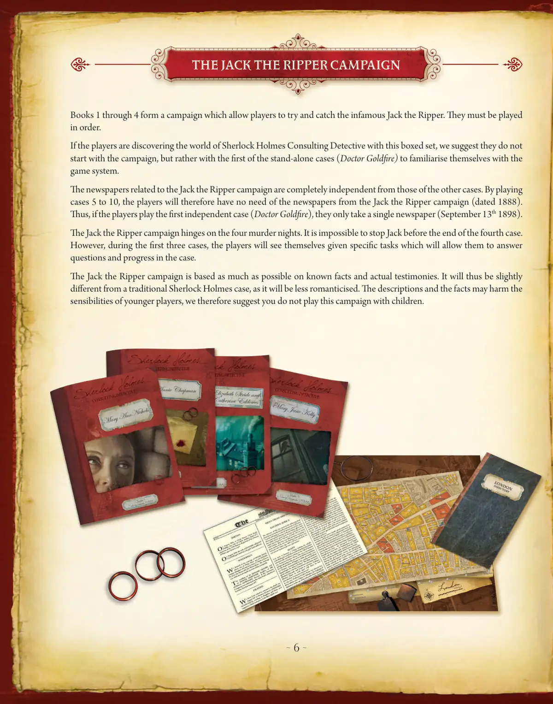
<figcaption>原版规则书 · 第 8 页（点击图片放大）</figcaption>
</figure>

<details class="mt-fold">
<summary>📝 第 8 页 AI 机翻对照（点击展开）</summary>
<div class="mt-body"><p>h 6 h</p>

<p>第1至4册构成一个战役，让玩家尝试追捕臭名昭著的开膛手杰克。它们必须按顺序进行。</p>

<p>如果玩家是通过这个盒装套装接触福尔摩斯咨询侦探世界的，我们建议他们不要从战役开始，而是从第一个独立案件（戈德法医案）开始，以熟悉游戏系统。</p>

<p>与开膛手杰克战役相关的报纸与其他案件的报纸完全独立。因此，玩家在玩第5至10案时，不需要开膛手杰克战役的报纸（日期为1888年）。</p>

<p>因此，如果玩家玩第一个独立案件（戈德法医案），他们只需拿一份报纸（1898年9月13日）。</p>

<p>开膛手杰克战役围绕四个谋杀之夜展开。在第四案结束前，不可能阻止杰克。然而，在前三个案件中，玩家会看到自己被赋予特定任务，这将帮助他们回答问题并推进案件。</p>

<p>开膛手杰克战役尽可能基于已知事实和真实证词。因此，它将与传统的福尔摩斯案件略有不同，因为它较少浪漫化。描述和事实可能会让年轻玩家感到不适，因此我们建议不要与儿童一起玩这个战役。</p>

<h2>开膛手杰克战役</h2></div>
</details>

<figure>
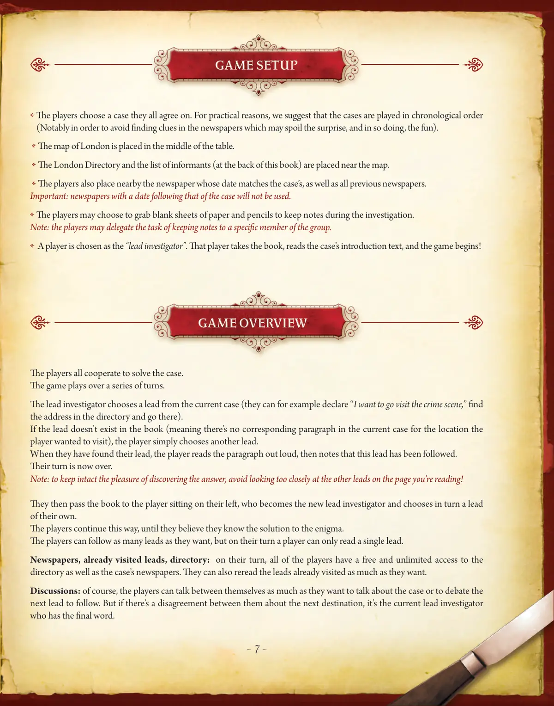
<figcaption>原版规则书 · 第 9 页（点击图片放大）</figcaption>
</figure>

<details class="mt-fold">
<summary>📝 第 9 页 AI 机翻对照（点击展开）</summary>
<div class="mt-body"><p>h  7 h</p>

<p> 玩家们选择一个所有人都同意的案件。出于实际原因，我们建议按顺序进行案件（特别是为了避免在报纸中发现可能破坏惊喜和乐趣的线索）。</p>

<p> 伦敦地图被放置在桌子中央。</p>

<p> 伦敦名录和线人名单（在本书末尾）被放置在地图附近。</p>

<p> 玩家们还将案件对应日期的报纸以及所有之前的报纸放在附近。</p>

<p>重要：日期晚于案件日期的报纸将不会被使用。</p>

<p> 玩家可以选择拿空白纸张和铅笔来在调查过程中做笔记。</p>

<p>注意：玩家可以将做笔记的任务委托给小组中的特定成员。</p>

<p>  一名玩家被选为"首席调查员"。该玩家拿过书，阅读案件的介绍文本，然后游戏开始！</p>

<h2>游戏设置</h2>

<p>所有玩家合作解决案件。</p>

<p>游戏进行一系列回合。</p>

<p>首席调查员从当前案件中选择一个线索（例如，他们可以宣布"我想去犯罪现场"，在名录中找到地址并前往那里）。</p>

<p>如果书中不存在该线索（意味着当前案件中没有对应玩家想要访问位置的段落），玩家只需选择另一个线索。</p>

<p>当他们找到线索后，玩家大声朗读该段落，然后记录该线索已被跟进。</p>

<p>他们的回合现在结束。</p>

<p>注意：为了保持发现答案的乐趣，避免在你正在阅读的页面上过于仔细地查看其他线索！</p>

<p>然后他们将书传递给他们左侧的玩家，该玩家成为新的首席调查员并依次选择自己的线索。</p>

<p>玩家们继续这种方式，直到他们认为知道谜题的解决方案。</p>

<p>玩家可以跟进尽可能多的线索，但在他们的回合中，玩家只能阅读一个线索。</p>

<p>报纸、已访问的线索、名录：在他们的回合中，所有玩家都可以自由且无限制地使用名录以及案件的报纸。他们也可以随意重新阅读已访问的线索。</p>

<p>讨论：当然，玩家们可以尽可能多地相互交谈，讨论案件或辩论下一个要跟进的线索。但如果他们对下一个目的地有分歧，则由首席调查员拥有最终决定权。</p>

<h2>游戏概览</h2></div>
</details>

<figure>
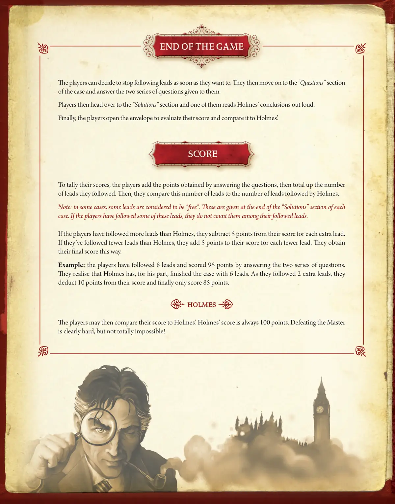
<figcaption>原版规则书 · 第 10 页（点击图片放大）</figcaption>
</figure>

<details class="mt-fold">
<summary>📝 第 10 页 AI 机翻对照（点击展开）</summary>
<div class="mt-body"><p>玩家可以随时决定停止追踪线索。然后他们进入案件的"问题"部分，并回答给他们的两组问题。</p>

<p>接着，玩家前往"解决方案"部分，其中一人大声读出福尔摩斯的结论。</p>

<p>最后，玩家打开信封评估自己的分数，并与福尔摩斯的分数进行比较。</p>

<p>为了计算分数，玩家将回答问题获得的分数相加，然后统计他们追踪的线索总数。接着，他们将这个线索数量与福尔摩斯追踪的线索数量进行比较。</p>

<p>注意：在某些情况下，一些线索被认为是"免费"的。这些线索在每个案件的"解决方案"部分末尾给出。如果玩家追踪了这些线索中的某些，他们不计入已追踪线索中。</p>

<p>如果玩家追踪的线索比福尔摩斯多，他们要从分数中减去每多一条线索5分。</p>

<p>如果他们追踪的线索比福尔摩斯少，他们要从分数中加上每少一条线索5分。他们通过这种方式获得最终分数。</p>

<p>示例：玩家追踪了8条线索，并通过回答两组问题获得了95分。他们意识到福尔摩斯完成了案件，只追踪了6条线索。由于他们多追踪了2条线索，他们从分数中扣除10分，最终只得到85分。</p>

<p>福尔摩斯</p>

<p>然后玩家可以将自己的分数与福尔摩斯的分数进行比较。福尔摩斯的分数总是100分。击败大师显然很难，但并非完全不可能！</p>

<h2>游戏结束</h2>

<h2>分数</h2></div>
</details>

<figure>
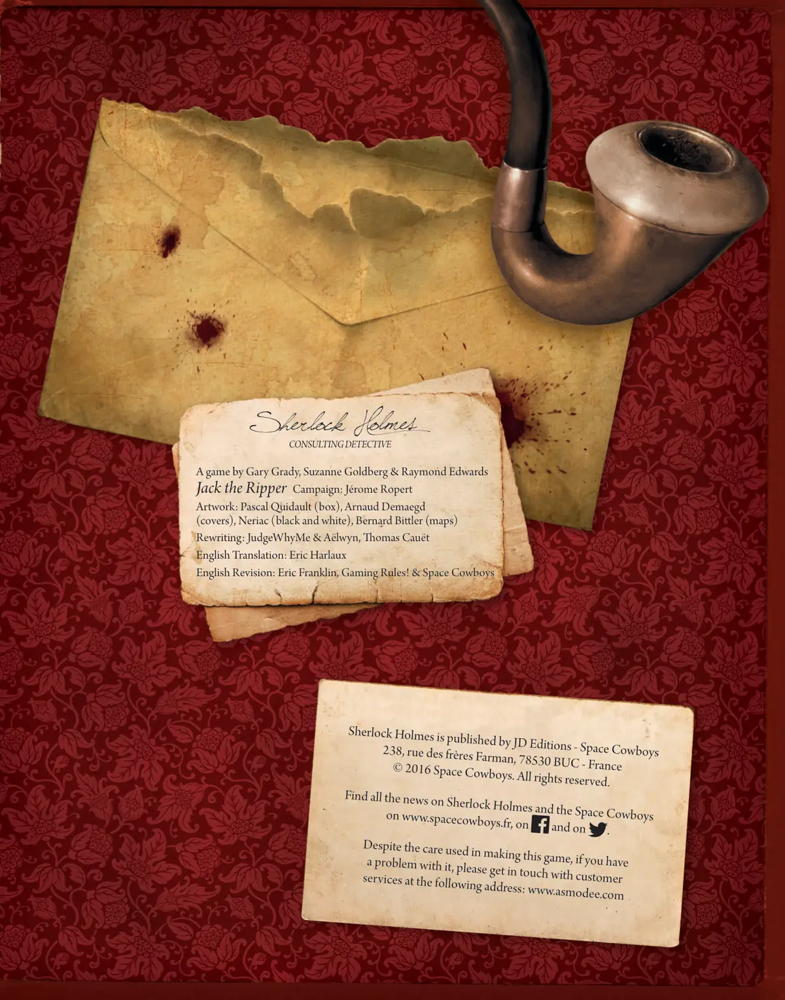
<figcaption>原版规则书 · 第 11 页（点击图片放大）</figcaption>
</figure>

<details class="mt-fold">
<summary>📝 第 11 页 AI 机翻对照（点击展开）</summary>
<div class="mt-body"><p>一款由 Gary Grady、Suzanne Goldberg &amp; Raymond Edwards 设计的游戏</p>

<p>开膛手杰克战役：Jérome Ropert</p>

<p>美术：Pascal Quidault（盒面）、Arnaud Demaegd（封面）、Neriac（黑白）、Bernard Bittler（地图）</p>

<p>改写：JudgeWhyMe &amp; Aëlwyn、Thomas Cauët</p>

<p>英文翻译：Eric Harlaux</p>

<p>英文校对：Eric Franklin、Gaming Rules! &amp; Space Cowboys</p>

<h2>咨询侦探</h2>

<p>《福尔摩斯》由 JD Editions - Space Cowboys 出版</p>

<p>238, rue des frères Farman, 78530 BUC - 法国</p>

<p>© 2016 Space Cowboys. 保留所有权利。</p>

<p>在 www.spacecowboys.fr、</p>

<p>和</p>

<p>上获取关于福尔摩斯和太空牛仔的所有最新消息。</p>

<p>尽管制作这款游戏时非常用心，但如果您遇到问题，请通过以下地址联系客户服务：www.asmodee.com</p></div>
</details>

<figure>
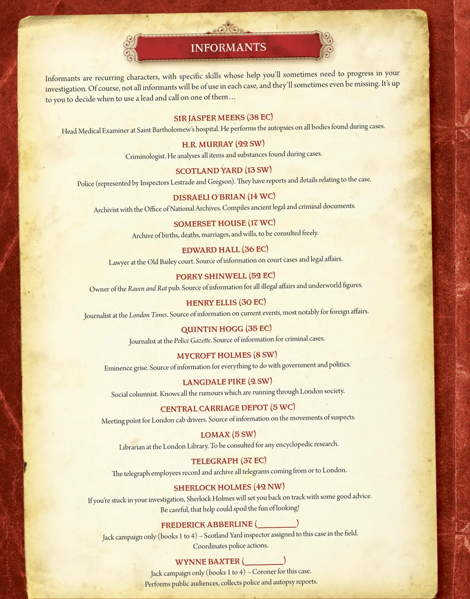
<figcaption>原版规则书 · 第 12 页（点击图片放大）</figcaption>
</figure>

<details class="mt-fold">
<summary>📝 第 12 页 AI 机翻对照（点击展开）</summary>
<div class="mt-body"><p>线人是反复出现的角色，他们拥有特殊技能，有时你需要借助他们的帮助来推进调查。当然，并非所有线人在每个案件中都有用，他们有时甚至会缺席。由你决定何时使用线索并召唤其中一位…</p>

<h2>贾斯珀·米克斯爵士 (38 EC)</h2>

<p>圣巴多罗买医院首席医疗检查官。他对案件中发现的全部尸体进行尸检。</p>

<h2>H.R. 默里 (22 SW)</h2>

<p>犯罪学家。他对案件中发现的物品和物质进行分析。</p>

<h2>苏格兰场 (13 SW)</h2>

<p>警方（由雷斯垂德和格雷格森探长代表）。他们拥有与案件相关的报告和详情。</p>

<h2>迪斯雷利·奥布莱恩 (14 WC)</h2>

<p>国家档案馆档案管理员。汇编古代法律和犯罪文件。</p>

<h2>萨默塞特宫 (17 WC)</h2>

<p>出生、死亡、婚姻和遗嘱档案，可自由查阅。</p>

<h2>爱德华·霍尔 (36 EC)</h2>

<p>老贝利法庭律师。案件和法律事务的信息来源。</p>

<h2>波基·辛韦尔 (52 EC)</h2>

<p>乌鸦与鼠酒馆老板。所有非法事务和黑社会人物的信息来源。</p>

<h2>亨利·埃利斯 (30 EC)</h2>

<p>伦敦时报记者。时事新闻的信息来源，尤其以外交事务为主。</p>

<h2>昆廷·霍格 (35 SW)</h2>

<p>警察公报记者。刑事案件的信息来源。</p>

<h2>迈克罗夫特·福尔摩斯 (8 SW)</h2>

<p>幕后操纵者。与政府和政治相关的所有事务的信息来源。</p>

<h2>兰代尔·派克 (2 SW)</h2>

<p>社交专栏作家。知晓伦敦社会流传的所有谣言。</p>

<h2>中央马车仓库 (5 WC)</h2>

<p>伦敦马车司机会面地点。嫌疑人动向的信息来源。</p>

<h2>洛马克斯 (5 SW)</h2>

<p>伦敦图书馆图书管理员。可咨询任何百科式研究。</p>

<h2>电报局 (37 EC)</h2>

<p>电报局员工记录并归档所有进出伦敦的电报。</p>

<h2>夏洛克·福尔摩斯 (42 NW)</h2>

<p>如果你在调查中陷入困境，夏洛克·福尔摩斯会给你一些好建议，让你重回正轨。小心，这种帮助可能会破坏寻找的乐趣！</p>

<h2>弗雷德里克·阿伯莱恩 (__________)</h2>

<p>仅限开膛手杰克战役（第1至4册）——负责此案现场调查的苏格兰场探长。协调警方行动。</p>

<h2>温·巴克斯特 (__________)</h2>

<p>仅限开膛手杰克战役（第1至4册）——此案的法医。主持公开听证会，收集警方和尸检报告。</p>

<h2>线人</h2></div>
</details>
        </div>

        <footer class="source-note">
<p>来源：<a href="https://cdn.svc.asmodee.net/production-spacecowboys/uploads/2025/11/59baa2_6b8d120337b04e9b881d8a135d0a189c.pdf" target="_blank" rel="noopener">Space Cowboys 官方游戏页（spacecowboys-games.com/game/jack-the-ripper-west-end-adventures）Rulebook English 下载</a>（1981 59baa2_6b8d120337b04e9b881d8a135d0a189c.pdf）· 译文仅供个人学习查阅，规则内容归 Space Cowboys (Ystari 现行版) 及版权方所有 · 原文版權與商标归原出版方。</p>
</footer>
      </article>
    </main>
  </div>

  <button class="to-top" aria-label="返回顶部" data-i18n-aria="backTop">↑</button>
  <script src="../assets/js/i18n.js"></script>
  <script src="../assets/js/main.js"></script>
</body>
</html>
